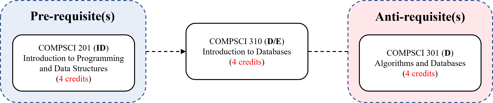

Introduction to Databases (COMPSCI 310)
Fall 2023-2024 / Session 2 (7 weeks, 35 hours)
Course Period: October 23 - December 7, 2023
- Lectures: Monday / Tuesday / Wednesday / Thursday @ 08:30-09:45 (Classroom: CCT E1012 + Zoom)
In computing, a database is an organized collection of data stored and accessed electronically. Small databases can be stored on a file system, while large databases are hosted on computer clusters or cloud storage. The design of databases spans formal techniques and practical considerations, including data modeling, efficient data representation and storage, query languages, security and privacy of sensitive data, and distributed computing issues, including supporting concurrent access and fault tolerance.
This course focuses on data modeling, database design theory, data definition and manipulation languages, storage and indexing techniques, query processing and optimization, concurrency control and recovery, database programming interfaces. Structured Query Language (SQL) will be additionally introduced to build and maintain databases for real applications.
By the end of this course, you will be able to:
- analyze and evaluate an existing database design
- design and build databases from scratch
- deliver data-driven software designs
- manipulate any given relational database
- acquire the basic theoretical and algorithmic concepts behind databases

The chart, on the right, shows how COMPSCI 310 fits to the DKU curriculum, where the abbreviations indicate the course types, i.e. D: Divisional, DF: Divisional Foundation, ID: Interdisciplinary and E: Elective. Refer to the DKU Undergraduate Bulletin for more details.
Pre-requisite(s)
- COMPSCI 201: Introduction to Programming and Data Structures
Anti-requisite(s)
- COMPSCI 301: Algorithms and Databases
Reference Books
Database Systems, Avi Silberschatz, Henry F. Korth, S. Sudarshan (7th Edition), 2019, McGraw-Hill (Free Access: ProQuest - Duke U.) [ Lecture Slides ] [ SQLite ]Supplementary Books:
- Database Systems: Design, Implementation, & Management, Carlos Coronel, Steven Morris (13th Edition), 2018, Cengage Learning
- Fundamentals of Database Systems, Ramez Elmasri, Shamkant B. Navathe (7th Edition), 2015, Pearson
- Database Systems: a Practical Approach to Design, Implementation, and Management, Thomas Connolly, Carolyn Begg (6th Edition), 2014, Pearson
- Fundamentals of Database Management Systems, Mark L. Gillenson (2nd Edition), 2011, John Wiley & Sons
- Database Management Systems, Raghu Ramakrishnan, Johannes Gehrke (3rd Edition), 2003, McGraw-Hill [ Supporting Materials ]
- Database Systems: The Complete Book, Hector Garcia-Molina, Jeffrey Ullman, Jennifer Widom (2nd Edition), 2008/2013, Pearson
- Database Design for Mere Mortals: A Hands-On Guide to Relational Database Design, Michael J. Hernandez (4th Edition), 2020, Addison-Wesley
- Database Concepts, David M. Kroenke, David J. Auer, Scott L. Vandenberg, Robert C. Yoder (10th Edition), 2023, Pearson
- Modern Database Management, Heikki Topi, Venkataraman Ramesh, Jeffrey A. Hoffer (13th Edition), 2019, Pearson
- Database Design with UML and SQL, Alvaro Monge (4th Edition), 2019, Pearson (Free Book)
- Practical SQL: A Beginner's Guide to Storytelling with Data, Anthony DeBarros (2nd Edition), 2022, No Starch Press
- Learning SQL: Generate, Manipulate, and Retrieve Data, Alan Beaulieu (3rd Edition), 2020, O'Reilly
- SQL For Dummies, Allen G. Taylor (9th Edition), 2018, For Dummies
- Python Programming and SQL, Philip Robbins (1st Edition), 2023
- Using SQLite, Jay Kreibich (1st Edition), 2010, O'Reilly
- Learn SQLite with Python in 24 hours For Beginners, S. Basu (1st Edition), 2021
- XML For Dummies, Lucinda Dykes, Ed Tittel (4th Edition), 2005, For Dummies
- XML in a Nutshell, Elliotte Rusty Harold, W. Scott Means (3rd Edition), 2004, O'Reilly
- Learning XML, Erik T. Ray (2nd Edition), 2003, O'Reilly
- MySQL and JSON: a Practical Programming Guide, David Stokes (1st Edition), 2018, McGraw-Hill / Oracle Press
- JSON at Work, Tom Marrs (1st Edition), 2017, O'Reilly
- Introduction to JavaScript Object Notation, Lindsay Bassett (1st Edition), 2015, O'Reilly
Lecture Notes / Slides
- Week 1 [23/10 - 26/10] (Keywords: History, Terminology and Basics; Data; Databases; ; Database Systems; Database Management Systems)
- About COMPSCI 310
- Databases: Basics
- Book Chapter: Database System Concepts by Avi Silberschatz, Henry F. Korth, S. Sudarshan (7th Ed., 2019), Chapter 1 - Introduction
- Book Chapter (Optional): Database Systems - Design, Implementation, & Management by Carlos Coronel, Steven Morris (13th Ed., 2018), Chapter 1 - Database Systems
- Book Chapter (Optional): Database Systems - Design, Implementation, & Management by Carlos Coronel, Steven Morris (13th Ed., 2018), Chapter 2 - Data Models
- Relational Model: Relational Databases, Database Schema, Keys, Relational Algebra
- Book Chapter: Database System Concepts by Avi Silberschatz, Henry F. Korth, S. Sudarshan (7th Ed., 2019), Chapter 2 - Introduction to the Relational Model
- Book Chapter (Optional): Database Systems - Design, Implementation, & Management by Carlos Coronel, Steven Morris (13th Ed., 2018), Chapter 3 - Relational Database Model
- Week 2 [30/10 - 02/11] SQL Basics (Keywords: Structured Query Language (SQL))
- Introduction to Structured Query Language (SQL)
- Book Chapter: Database System Concepts by Avi Silberschatz, Henry F. Korth, S. Sudarshan (7th Ed., 2019), Chapter 3.1 - Overview of SQL
- Book Chapter (Optional): Database Systems - Design, Implementation, & Management by Carlos Coronel, Steven Morris (13th Ed., 2018), Chapter 7 - Introduction to SQL
- Data Definition
- Book Chapter: Database System Concepts by Avi Silberschatz, Henry F. Korth, S. Sudarshan (7th Ed., 2019), Chapter 3.2 - SQL Data Definition
- Basic Structure and Operations
- Book Chapter: Database System Concepts by Avi Silberschatz, Henry F. Korth, S. Sudarshan (7th Ed., 2019), Chapter 3.3 - Basic Structure of SQL Queries
- Book Chapter: Database System Concepts by Avi Silberschatz, Henry F. Korth, S. Sudarshan (7th Ed., 2019), Chapter 3.2 - SQL Data Definition
- Homework 1: TBA
- Week 3 [06/11 - 09/11] Intermediate SQL (Keywords: Join; Views; Integrity Constraints; Data Types; Schemas)
- JOIN Expressions
- Book Chapter: Database System Concepts by Avi Silberschatz, Henry F. Korth, S. Sudarshan (7th Ed., 2019), Chapter 4.1 - Join Expressions
- External Tutorial: W3 Schools - SQL Joins
- Views
- Book Chapter: Database System Concepts by Avi Silberschatz, Henry F. Korth, S. Sudarshan (7th Ed., 2019), Chapter 4.2 - Views
- External Tutorial: W3 Schools - SQL Views
- Integrity Constraints
- Book Chapter: Database System Concepts by Avi Silberschatz, Henry F. Korth, S. Sudarshan (7th Ed., 2019), Chapter 4.4 - Integrity Constraints
- Data Types and Schemas
- Book Chapter: Database System Concepts by Avi Silberschatz, Henry F. Korth, S. Sudarshan (7th Ed., 2019), Chapter 4.5 - SQL Data Types and Schemas
- External Tutorial: W3 Schools - SQL Data Types
- Homework 2: TBA
- Week 4 [13/11 - 16/11] Advanced SQL (Keywords: SQL Programming Interfaces; Functions; Procedures; Triggers)
- Database Programming Interfaces
- Book Chapter: Database System Concepts by Avi Silberschatz, Henry F. Korth, S. Sudarshan (7th Ed., 2019), Chapter 5.1 - Accessing SQL from a Programming Language
- Functions and Procedures
- Book Chapter: Database System Concepts by Avi Silberschatz, Henry F. Korth, S. Sudarshan (7th Ed., 2019), Chapter 5.2 - Functions and Procedures
- Triggers
- Book Chapter: Database System Concepts by Avi Silberschatz, Henry F. Korth, S. Sudarshan (7th Ed., 2019), Chapter 5.3 - Triggers
- Homework 3: TBA
- MIDTERM (Date: TBA)
- Week 5 [20/11 - 23/11] (Keywords: Relational Database Design; XML; JSON)
- Relational Database Design
- Book Chapter: Database System Concepts by Avi Silberschatz, Henry F. Korth, S. Sudarshan (7th Ed., 2019), Chapter 7 - Relational Database Design
- Complex Data Types
- Book Chapter: Database System Concepts by Avi Silberschatz, Henry F. Korth, S. Sudarshan (7th Ed., 2019), Chapter 8.1 - Semi-structured Data
- Book Chapter (Optional): Database Systems - Design, Implementation, & Management by Carlos Coronel, Steven Morris (13th Ed., 2018), Chapter 15.3 - Extensible Markup Language (XML)
- Book Chapter (Optional): Fundamentals of Database Systems by Ramez Elmasri, Shamkant B. Navathe (7th Ed., 2015), Chapter 13 - XML: Extensible Markup Language
- External Tutorial (Optional): W3 Schools - XML Tutorial
- External Tutorial: (Optional): W3 Schools - JSON Tutorial
- Book Chapter: Database System Concepts by Avi Silberschatz, Henry F. Korth, S. Sudarshan (7th Ed., 2019), Chapter 8.2 - Object Orientation
- Book Chapter (Optional): Fundamentals of Database Systems by Ramez Elmasri, Shamkant B. Navathe (7th Ed., 2015), Chapter 12 - Object and Object-Relational Databases
- Homework 4: TBA
- Week 6 [27/11 - 30/11] (Keywords: Data Storage Structures; Indexing)
- Storage Structures
- Book Chapter: Database System Concepts by Avi Silberschatz, Henry F. Korth, S. Sudarshan (7th Ed., 2019), Chapter 13 - Data Storage Structures
- Indexing
- Book Chapter: Database System Concepts by Avi Silberschatz, Henry F. Korth, S. Sudarshan (7th Ed., 2019), Chapter 14 - Indexing
- Homework 5: TBA
- Week 7 [04/12 - 07/12] (Keywords: Query Optimization; Concurrency Control; ; Recovery System)
- Query Optimization
- Book Chapter: Database System Concepts by Avi Silberschatz, Henry F. Korth, S. Sudarshan (7th Ed., 2019), Chapter 16 - Query Optimization
- Book Chapter (Optional): Database Systems - Design, Implementation, & Management by Carlos Coronel, Steven Morris (13th Ed., 2018), Chapter 11 - Database Performance Tuning and Query Optimization
- Concurrency Control
- Book Chapter: Database System Concepts by Avi Silberschatz, Henry F. Korth, S. Sudarshan (7th Ed., 2019), Chapter 18 - Concurrency Control
- Book Chapter (Optional): Database Systems - Design, Implementation, & Management by Carlos Coronel, Steven Morris (13th Ed., 2018), Chapter 10 - Transaction Management and Concurrency Control
- Recovery System
- Book Chapter: Database System Concepts by Avi Silberschatz, Henry F. Korth, S. Sudarshan (7th Ed., 2019), Chapter 19 - Recovery System
- FINAL (Date: TBA)
Grading
- Homework: 20%
- Mathematical, Conceptual, or Programming related
- Submit on Sakai; 6 in total, the lowest score is dropped
- Weekly Journal: 10%
- Each week, write a page or so about what you have learned
- Submit on Sakai; 2 points off for each missing journal, capped at 10
- Midterm: 20%
- Final: 30%
- Project: 20%
- Report Rubric (TBA)
- Presentation Rubric (TBA)
Reference Courses
- COMPSCI 316: Introduction to Databases by Sudeepa Roy (Duke U.) [ Lecture Slides ]
- CMU 15-445/645: Database Systems by Charlie Garrod (CMU)
Other Books
Quick / Easy Reads:- Readings in Database Systems, Peter Bailis, Joseph M. Hellerstein, Michael Stonebraker (5th Edition - Eds.), 2015 (Free Book)
- The Manga Guide to Databases, Mana Takahashi, Shoko Azuma (1st Edition), 2009, No Starch Press
- Introducing Python for Computer Science and Data Scientists, Paul Deitel, Harvey Deitel (1st Edition), 2020, Pearson
- Introduction to Computation and Programming Using Python: With Application to Computational Modeling and Understanding Data, John V. Guttag (3rd Edition), 2021, MIT Press [ Source Code in Python ]
- Starting out with Python, Tony Gaddis (5th Edition), 2021, Pearson
- Python Programming and Numerical Methods: A Guide for Engineers and Scientists , Qingkai Kong, Timmy Siauw, Alexandre Bayen (1st Edition), 2020, Academic Press (Free Book)
- Think Python: How to Think Like a Computer Scientist, Allen B. Downey (2nd Edition), 2016, O'Reilly Press (Free Book)
- How to Think Like a Computer Scientist: Learning with Python 3, Peter Wentworth, Jeffrey Elkner, Allen B. Downey, Chris Meyers (3rd Edition), 2012 (Free Book)
- A Programmer's Guide to Computer Science (Vol. 1), William M. Springer II (1st Edition), 2019, Jaxson Media
- A Programmer's Guide to Computer Science (Vol. 2), William M. Springer II (1st Edition), 2020, Jaxson Media
- A Byte of Python, Swaroop C. H. (4th Edition), 2016 (Free Book)
- Project Python, Devin Balkcom, 2011 (Free Book)
- Python for Everybody: Exploring Data in Python 3, Charles Severance, 2016 (Free Book)
- Automate The Boring Stuff With Python, Al Sweigart (2nd Edition), 2019, No Starch Press (Free Book)
- Beyond the Basic Stuff with Python, Al Sweigart (1st Edition), 2020, No Starch Press (Free Book)
- Python Programming in Context, Bradley N. Miller, David L. Ranum, Julie Anderson (3rd Edition), 2019, Jones & Bartlett Learning
- Python Programming: An Introduction to Computer Science, John Zelle (3rd Edition), 2016, Franklin, Beedle & Associates
- A Hands-On, Project-Based Introduction to Programming, Eric Matthes (2nd Edition), 2016, No Starch Press (Free Book)
- Learn Python 3 the Hard Way, Zed A. Shaw (1st Edition), 2017, Addison-Wesley
- Introducing Python: Modern Computing in Simple Packages, Bill Lubanovic (2nd Edition), 2019, O'Reilly Press
- Clean Code in Python: Develop Maintainable and Efficient Code, Mariano Anaya (2nd Edition), 2021, Packt
- The Self-Taught Computer Scientist: The Beginner's Guide to Data Structures & Algorithms, Cory Althoff (1st Edition), 2021, Wiley
- The Big Book of Small Python Projects: 81 Easy Practice Programs, Al Sweigart (1st Edition), 2021, No Starch Press (Free Book)
- Invent Your Own Computer Games with Python, Al Sweigart (4th Edition), 2016, No Starch Press (Free Book)
- Cracking Codes with Python: An Introduction to Building and Breaking Ciphers, Al Sweigart (1st Edition), 2018, No Starch Press (Free Book)
- Python Data Science Handbook: Essential Tools for Working with Data, Jake VanderPlas (1st Edition), 2017, O'Reilly Press
- Python for Data Analysis: Data Wrangling with Pandas, NumPy, and IPython, Wes McKinney (2nd Edition), 2017, O'Reilly Press
- Data Science from Scratch: First Principles with Python, Joel Grus (2nd Edition), 2019, O'Reilly Press
- Introduction to Machine Learning with Python: A Guide for Data Scientists, Andreas C. Muller, Sarah Guido (1st Edition), 2017, O'Reilly Press
- Data Visualization: A Practical Introduction, Kieran Healy (1st Edition), 2019, Princeton University Press
- Visualization Analysis and Design,Tamara Munzner (1st Edition), 2014, CRC Press
- Better Data Visualizations: A Guide for Scholars, Researchers, and Wonks, Jonathan Schwabish (1st Edition), 2021, Columbia University Press
- The Visual Display of Quantitative Information, Edward R. Tufte (2nd Edition), 2001, Graphics Press
- Fundamentals of Data Visualization - A Primer on Making Informative and Compelling Figures, Claus O. Wilke (1st Edition), 2019, O'Reilly Press (Free Book)
- Making Data Visual - A Practical Guide to Using Visualization for Insight, Danyel Fisher, Miriah Meyer (1st Edition), 2018, O'Reilly Press
- Storytelling with Data: A Data Visualization Guide for Business Professionals, Cole Nussbaumer Knaflic (1st Edition), 2015, Wiley
- Big Data Fundamentals: Concepts, Drivers & Techniques, Thomas Erl, Wajid Khattak, Paul Buhler (1st Edition), 2016, Pearson
- Big Data For Dummies, Judith Hurwitz, Alan Nugent, Fern Halper, Marcia Kaufman (1st Edition), 2013, Wiley
- Everybody Lies: Big Data, New Data, and What the Internet Can Tell Us About Who We Really Are, Seth Stephens-Davidowitz (1st Edition), 2018, Dey Street Books
- Big Data in Practice: How 45 Successful Companies Used Big Data Analytics to Deliver Extraordinary Results, Bernard Marr (1st Edition), 2016, Wiley
- NoSQL Distilled: A Brief Guide to the Emerging World of Polyglot Persistence, Pramod J. Sadalage, Martin Fowler (1st Edition), 2013, Addison-Wesley
- NoSQL for Mere Mortals, Dan Sullivan Sullivan (1st Edition), 2015, Addison-Wesley
- High Performance Spark, Holden Karau, Anya Bida, Rachel Warren (2nd Edition), 2024, O'Reilly
- Metadata, Jeffrey Pomerantz (1st Edition), 2015, MIT Press
Other Materials / Resources
- Database Design Glossary from the Database Design with UML and SQL book
- An overview of Python Data Visualization libraries
- Philip W. L. Fong, 2009. Reading a Computer Science research paper. ACM SIGCSE Bulletin, 41(2), pp.138-140
- You and Your Research by Richard Hamming (Bell Labs / NPS). Bell Communications Research Colloquium Seminar, 7 March 1986
- An Online LaTeX Editor: Overleaf
- LaTeX Tutorial (Overleaf): Learn LaTeX in 30 minutes
- The Not So Short Introduction to LaTeX by Tobias Oetiker, Hubert Partl, Irene Hyna, Elisabeth Schlegl, 2021
- LaTeX Handwritten Symbol Recognition: Detexify
- How To Speak / Present (Video) by Patrick Winston (MIT)